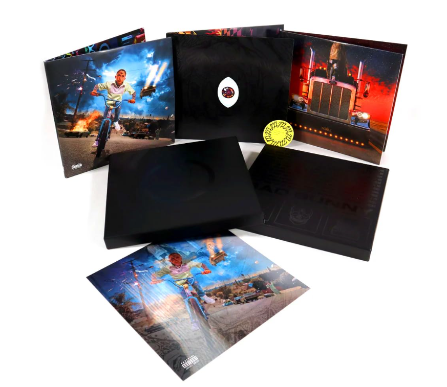
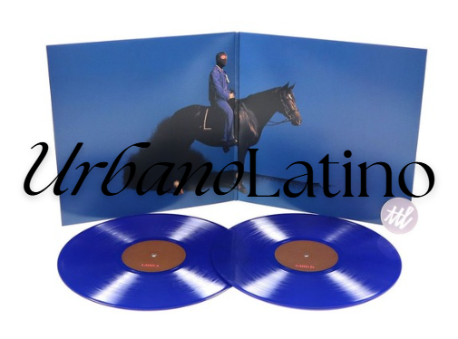
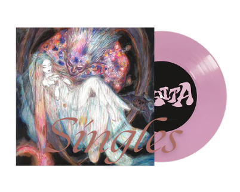
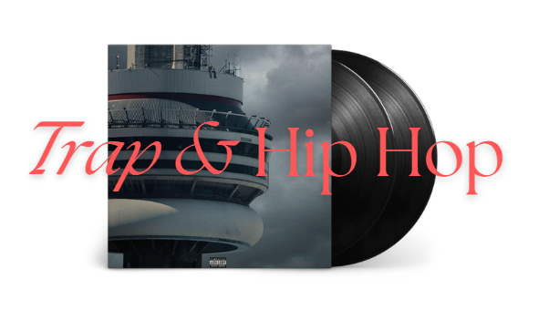

LifeMusic es una empresa que busca atraer a las nuevas generaciones a el mundo del vinilo.
El vinilo consigue algo que desde tu teléfono móvil no puedes, cada disco es una experiencia, desde que lo tienes en tus manos, lees su portada, sientes su peso y escuchas la música sin interrupciones ni algoritmos. Cada reproducción te invita a desconectar, a sumergirte en los matices de cada canción y a vivir la música de una forma más auténtica y personal. Además, coleccionar vinilos se convierte en un viaje propio, donde cada disco cuenta una historia y refleja tu estilo y tus gustos de manera única. Eso no lo cambia nadie.
Categorias


